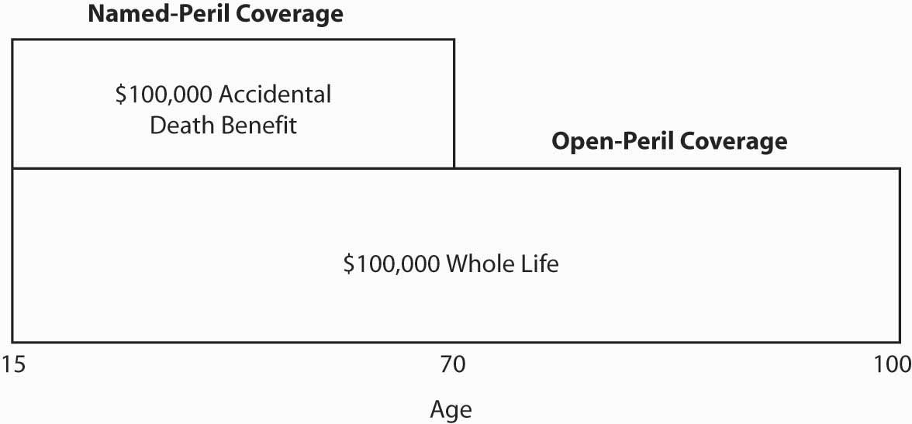

In this section we elaborate on the following:
In the United States, we typically pay individual life insurance premiums out of funds on which we previously had paid income taxes. That is, premiums are paid from after-tax income. Therefore, there are no income taxes on the death benefit proceeds.
In general, when premiums are paid from after-tax income, death benefits are not part of the beneficiary’s or anyone else’s gross income.Tax law changes in 1988 made single-premium surrenders and policy loans undesirable because any gain over net premiums becomes taxable immediately. Furthermore, gains are subject to an additional 10 percent tax penalty if the policyowner is less than age fifty-nine and a half. Thus, the tendency of single-premium buyers is to let the policy mature as a death claim. At that time there are no adverse income tax effects. Therefore, whether the death is soon or long after purchasing a $100,000 life insurance policy, the named beneficiary, regardless of relationship, would not incur any federal income taxes on the proceeds, including gains within the cash value portion of the policy. Nontaxable proceeds also include nonbasic benefits such as term riders, accidental death benefits, and paid-up additions. There are some exclusions, but a discussion of the exclusions is beyond the scope of this text. Some life insurance policies include dividends, and these policyholder dividends are excluded from federal income taxation. The federal government reasons that dividends constitute the return of an original overcharge of premiums. The premiums were paid with after-tax dollars, so any portion of those premiums, returned as a dividend, must have already been taxed as well. More will be said about dividends later in this chapter.
Except for single-premium life insurance, the purchase of most life insurance is motivated primarily by a need for death protection. The availability of private life insurance reduces pressures on government to provide welfare to families that experience premature deaths of wage earners. Furthermore, life insurance is owned by a broad cross section of U.S. society. This, along with effective lobbying by life insurers, may help explain the tax treatment of life insurance.
The major policy provisions are listed in Table 19.2 "Main Policy Provisions in the Whole Life Policy in " for the sample whole life policy in Chapter 26 "Appendix C" and in Table 19.3 "Main Policy Provisions of the Universal Life Policy in " for the sample universal life policy in Chapter 27 "Appendix D". Most of the explanations of the provisions relate to these sample policies, but they also apply to other whole life and universal life policies of other insurers. For more comprehensive comparisons of each of the provisions, you are invited to study the policies themselves.
Table 19.2 Main Policy Provisions in the Whole Life Policy in Chapter 26 "Appendix C"
| These provisions apply to most types of life insurance policies. The bolded provision is the only one unique to whole life. | |
| Policy identification | Payment of benefits provisions |
| Schedule of benefits | Premium provisions |
| Schedule of premiums | Dividend provisions |
| Schedule of insurance and values | Guaranteed value provisions |
| Definitions | Policy loan provisions |
| Ownership provisions | General provisions |
Table 19.3 Main Policy Provisions of the Universal Life Policy in Chapter 27 "Appendix D"
| These provisions apply to most types of life insurance policies. Those unique to universal life are bolded. | |
| Policy identification | Ownership provisions |
| Schedule of benefits | Death benefit and death benefit options provisions |
| Schedule of premiums | Payment of benefits provisions |
| Monthly deductions | Premium provisions |
| Schedule of surrender charges | Guaranteed value provisions |
| Cost of insurance rates and monthly charges | General provisions |
| Definitions | Policy loan provisions |
| General provisions | |
Both sample policies begin with a cover page (similar to any policy’s declarations page) indicating the amounts of coverage and premiums. Because universal life has flexible premiums, the page also includes the monthly deduction statement. The second page in both policies relates to guarantees. In the whole life policy, the guaranteed cash value is shown along with other options (discussed later); in the universal life policy, a schedule of surrender charges and the maximum monthly cost of insurance rates, as explained in the universal life section above, is provided.
The next section defines the terms in both of the sample policies. The definitions are preceded by an explanation of ownership.
The whole and universal life policies have similar ownership sections. OwnershipIn life insurance, refers to rights policyholders have over their policies such as the right to assign the policy to someone else, to designate the beneficiary, to make a policy loan, or to surrender the policy for its cash value. refers to rights. The owner of a life insurance policy has rights, such as the right to assign the policy to someone else, to designate the beneficiary, to make a policy loan, or to surrender the policy for its cash value. When filling out the initial policy application, the policyowner designates whether the rights should stay with the insured or be assigned to another person, such as a spouse or perhaps to a trust. The ownership provisionA provision filled out by the policyowner stating where the rights of the policy should be assigned (e.g., insured, spouse, or a trust)., sometimes simply labeled rights, shows this designation.
This section is unique to universal life policy, as would be expected from the lengthy explanation above regarding the two options of death benefits. In Chapter 27 "Appendix D", you can see the wording of these options, the amounts of coverage, and changes to the amounts.
The changes in basic amount provisionIn life insurance, specifies the conditions under which a policyowner can change the total face amount of the policy. specifies the conditions under which a policyowner can change the total face amount of the policy. Any requested decreases take place on a monthly anniversary date and reduce the most recent additions to coverage (if any) before affecting the initial face amount. Requests for increases in coverage must be made on a supplemental application and are subject to evidence of insurability.
This section applies to both the sample whole life and the sample universal life policies and to other policies in general. The purpose of the payment of benefits provisionIn life insurance, enables the owner of the policy to designate to whom the proceeds shall be paid when the insured dies. is to enable the owner of the policy to designate to whom the proceeds shall be paid when the insured dies. If no beneficiary is named, the proceeds will go to the owner’s estate. A revocable beneficiaryLife insurance beneficiary that can be changed at will by the policyowner. can be changed at will by the policyowner. Most people prefer the revocable provision. Irrevocable beneficiaryLife insurance beneficiary that cannot be changed only with the consent of the beneficiary. designations, on the other hand, can be changed only with the consent of the beneficiary. For example, a divorced spouse, as part of a property settlement, may be given an irrevocable interest in life insurance on his or her former spouse. The former spouse, as the insured and policyowner, would be required to continue premium payments but could not make a policy loan or other changes that would diminish the rights of the irrevocable beneficiary.
A beneficiary must survive the insured in order to be entitled to the proceeds of the policy. It is customary, therefore, to name one or more beneficiaries who are entitled to the proceeds in the event that the primary (first-named) beneficiary does not survive the insured. These are known as secondary or tertiary contingent beneficiariesIn life insurance, beneficiaries who are entitled to the proceeds in the event that the primary (first-named) beneficiary does not survive the insured.. Such beneficiaries are named and listed in the order of their priority.
If the insured and the primary beneficiary die in the same accident and none of the evidence shows who died first, there is a question as to whether the proceeds shall be paid to the estate of the primary beneficiary or to a contingent beneficiary. In states where the Uniform Simultaneous Death Act has been enacted, the proceeds are distributed as if the insured had survived the beneficiary. Where this act is not in effect, the courts have usually reached the same conclusion. If no contingent beneficiary has been named, the proceeds go to the estate of the policyowner, thus subjecting the proceeds to estate taxes, probate costs, and the claims of creditors. Probate costs are levied by the court that certifies that an estate has been settled properly. Probate costs (but not estate taxes) are avoided when benefits go to a named beneficiary.
A similar problem arises when the primary beneficiary survives the insured by only a short period. In such a case, the proceeds may be depleted by taxes and costs associated with the beneficiary’s estate settlement or because an annuity-type settlement option had been selected. This problem can be solved by adding a common disaster provision (or survivorship clause)Provides that the beneficiary of a life insurance policy must survive the insured by a specified period of time or must be alive at the time of payment to be entitled to the proceeds., which provides that the beneficiary must survive the insured by a specified period of time (e.g., seven to thirty days) or must be alive at the time of payment to be entitled to the proceeds. If neither of these conditions is fulfilled, the proceeds go to a contingent beneficiary or to the estate of the policyowner if a contingent beneficiary has not been named.
Policyowners should designate the beneficiary clearly. No questions should exist about the identity of the beneficiary at the time of the insured’s death. In designating children as beneficiaries, one must keep in mind that a minor is not competent to receive payment. In the event of the death of the insured prior to the maturity of a beneficiary child, a guardian may have to be appointed to receive the proceeds on behalf of the child. As a general rule, policyowners should avoid naming minors as beneficiaries. Where the objective is a substantial estate to benefit a child or children, the preferable approach would be to name a trust as beneficiary. The child or children (the ones already born and those to be born or join the family unit after a divorce and remarriage) could be the beneficiary(ies) of the trust.
Life insurance is designed to create a sum of money that can be used when the insured dies or the owner surrenders a cash value policy. In the early days of life insurance, the only form in which the death proceeds or cash value of a policy were paid was in a lump sum. Because a lump-sum payment is not desirable in all circumstances, several additional settlement options (or settlement plansAllows the policyholder or beneficiary of a life insurance contract to stipulate, from a variety of options, how the death benefit will be provided.; also called payment plans) have been developed and are now included in most policies. The owner may select an option in advance or leave the choice to the beneficiary. The owner may also change the option from time to time if the beneficiary designation is revocable. The payment plans have the following methods for death proceeds:
This section also applies to both the whole and the universal life policies. Premiums are payable on the due date on a monthly, quarterly, semiannual, or annual basis. The first premium must be paid in advance, while the insured is in good health and otherwise insurable. Subsequent premiums are due in advance of the period to which they apply. Insurance companies send a notice to the policyowner indicating when the premium is due. The time horizon over which premiums are payable depends on the type of policy (e.g., through age ninety-nine for a straight life policy), and it is stated on the cover page. Note in the sample universal life policy of Chapter 27 "Appendix D" that the premium limitations section allows the insurer to refund any overpayment of premiums. As you know, such possibility may occur because of the flexible premium allowed for universal life policies.
The law requires that the contract contain a provision entitling the policyowner to a grace periodPeriod of time within which payment of a past-due insurance premium (excluding the first premium) must be accepted by the insurer. within which payment of a past-due premium (excluding the first premium) must be accepted by the insurer. The grace period is thirty-one days in the whole life sample in Chapter 26 "Appendix C". Although the premium is past due during this period, the policy remains in force. If the insured dies during the grace period, the face amount of the policy minus the amount of the premium past due will be paid to the beneficiary. If the premium is not paid during the grace period of a traditional policy, a nonforfeiture option (to be discussed later) becomes effective. The purpose of the grace period is to prevent unintentional lapses. If it were not for this provision, an insured whose premium was paid one day late would have to prove his or her insurability in order to have the policy reinstated.
In variable, universal, and other flexible-premium policies, the grace period is usually sixty days, as seen in the universal life policy in Chapter 27 "Appendix D". This has meaning only when the cash value is not large enough to cover expense and mortality deductions for the next period. Most insurers notify the policyowner of such a situation. The cash surrender value in the first few policy years may be zero due to surrender charges. In that event, most universal and variable policies also contain a grace period exception clause. This clause states that during a specified period of time (generally the first few policy years, even if the policy has a negative surrender value), as long as at least the stated minimum premium has been paid during the grace period, the policy will continue in force.
The nonpayment of premium, accumulation to avoid lapse, and automatic premium loans sections apply only to whole life policies, as should be clear from the nature of inflexible premiums. Regarding automatic premium loansIf selected by a life insurance policyholder, provides that loans are taken automatically from the policy’s cash value to pay premiums at the end of a policy grace period., if the owner selects this option, at the end of the grace period, loans are taken automatically from the cash value to pay the premiums. The owner is charged interest and can cancel this provision at any time.
This section applies to both sample policies. If the grace period has expired with a premium still due, the policy is considered to have lapsed. A policyowner who wants to reinstate the policy rather than apply for new insurance must follow certain requirements. The reinstatement provisionProvides that unless a life insurance policy has been surrendered for cash, it may be reinstated at any time within five (in some cases, three, ten, or more) years after premium payments were stopped. provides that, unless the policy has been surrendered for cash, it may be reinstated at any time within five (in some cases, three, ten, or more) years after premium payments were stopped. Payment of all overdue premiums on the policy and other indebtedness to the insurer, plus interest on these items, is required along with payment of the current premium. Usually, the insured must provide satisfactory evidence of current insurability. This provision is shown in the sample whole life policy in Chapter 26 "Appendix C", and in the universal life sample in Chapter 27 "Appendix D".
Evidence of insurability may be as strict in the case of reinstatement as it is for obtaining new life insurance. The insurer may be interested in health, occupation, hobbies, and any other factors that may affect the probability of early death. For recently lapsed policies, most insurers require only a personal health statement from the insured. Universal and variable policies typically provide reinstatement without requiring payment of back premiums, as noted in Chapter 27 "Appendix D". In this event, the cash value of the reinstated policy equals the amount provided by the premium paid, after deductions for the cost of insurance protection and expenses.
In whole life policies only, after the death of the insured, the insurers refund any premium paid but unearned. For example, if an annual premium was paid on January 1 and the insured died on September 30, 25 percent (reflecting the remaining three months of the year) of the premium would be refunded. Most insurers explain their practice in a contract premium refund provisionIn whole life policies only, after the death of the insured, the insurers refund any premium paid but unearned for the term..
Participating policies of mutual insurers, such as State Farm, share in the profits the insurer earns because of lower-than-anticipated expenses, lower-than-expected mortality, and greater-than-expected investment earnings. The amounts returned to policyowners are called dividends. Dividends also involve the return of any premium overpayment. Dividends are payable annually on the policy anniversary. They are not guaranteed, but they are a highly significant element in many policies.
When purchasing a participating life insurance policy, the policyowner can choose how the dividend money should be spent from one or more of the following dividend optionsWhen purchasing a participating life insurance policy, the policyowner can choose how the dividend money will be distributed from among several choices. (see Chapter 26 "Appendix C"):
The majority of companies offer these four options. The selection of the appropriate dividend option is an important decision.
This section illustrates the major differences between the whole life and universal life policies. A whole life policy guarantees that a policyholder who decides to cancel the policy can either take cash for the surrender (cash) value or continue the policy in force as extended term insurance and paid-up insurance. These provisions are also called nonforfeiture optionsIn whole life insurance, guarantees that a policyholder who decides to cancel the policy can either take cash for the surrender (cash) value or continue the policy in force as extended term insurance and paid-up insurance. in other policies. The sample whole life policy lists these amounts in the Schedule of Insurance and Values in Chapter 26 "Appendix C".
As pointed out earlier, the cash value life plan results in the accumulation of a savings (or cash value element, from the insured’s perspective) that usually increases as each year passes. If the contract is terminated, the policyholder can receive the cash value, or the policy can be converted to extended term insuranceNonforfeiture option where the death benefit of a whole life policy continues at its previous level for as long as the cash value supports this amount of term insurance. or paid-up insuranceNonforfeiture option where death benefits are paid up completely without expiration date, as if a new policy providing a lower death benefit was in place.. Under the extended term insurance option, the death benefit continues at its previous level for as long as the cash value supports this amount of term insurance (like a single premium life). Under the paid-up insurance option, it is as if there is a new policy providing a lower lifetime death benefit than the old one did. The death benefits are paid up completely without an expiration date. Both extended term and paid-up options are nonforfeiture options.
With universal, current assumption, and variable universal life policies, the policyowner may discontinue premium payments at any time without lapsing the policy, as long as the surrender value is sufficient to cover the next deduction for the cost of insurance and expenses. In the universal life policy, there is a description of the account value at the end of the first month. It is 95 percent of the initial premium less the monthly deduction. Thereafter, adjustments take the interest rate into account. The following sections are covered in the sample universal life in Chapter 27 "Appendix D":
Policy loan provisionsApply to whole life and the universal life policies and allow the owner to borrow an amount up to the cash value from the insurer at a rate of interest specified in the policy and up to the account value in universal life. apply to both the whole life and the universal life policies. The owner can borrow an amount up to the cash value from the insurer at a rate of interest specified in the policy, and up to the account value in universal life. In the sample universal life policy in Chapter 27 "Appendix D", the interest rate is set at 8 percent. In the whole life policy, the majority of insurers use a fixed rate of interest or a variable rate, as indicated in the sample whole life policy in Chapter 26 "Appendix C".
Both the whole life and the universal life sample policies conclude with general-provision sections that include the following:
The written policy and the attached application constitute the entire agreement between the insurer and the policyowner. Because of this contract provision, agents cannot, orally or in writing, change or waive any terms of the contract. Statements in the application are considered representations, rather than warranties. This means that only those material statements that would have caused the insurer to make a different decision about the issuance of the policy, its terms, or premiums will be considered valid grounds to void the contract.
As would be expected from the discussion above, the changes in the universal life values require reporting to the policyowner on a regular basis. The annual report and projection of benefits and values state the obligation of the insurer to provide such annual reports. The projection of death benefits is not automatic. The policyowner can request it and may be charged $25, as shown in the sample policy in Chapter 27 "Appendix D".
As mentioned, the owner of a life insurance policy can transfer part or all of the rights to someone else. The assignment provisionProvides that the insurer will not be bound by any policy assignment until it has received notice, that any indebtedness to the company shall have priority over any assignment, and that the company is not responsible for the validity of any assignment. provides, however, that the company will not be bound by any assignment until it has received notice, that any indebtedness to the company shall have priority over any assignment, and that the company is not responsible for the validity of any assignment. This provision helps the company avoid litigation about who is entitled to policy benefits, and it protects the insurer from paying twice. As you can see in the sample policies in chapters 26 and 27, the “assignment may limit the interest of the beneficiary.”
Age and sex have a direct bearing on the cost of life insurance. Therefore, they are material facts. Thus, the misstatement of age or sexProvision in life insurance policies that if age or sex has been misstated in a life insurance policy, the amount of the insurance will be adjusted to that which the premium paid would have covered correctly. would ordinarily provide grounds, within the contestable period, for rescinding the contract. Most state laws, however, require that all policies include a provision that if age or sex has been misstated, the amount of the insurance will be adjusted to that which the premium paid would have covered correctly.
A typical incontestable provisionMakes a life insurance contract incontestable after it has been in force for two years during the lifetime of the insured. makes a contract incontestable after it has been in force for two years during the lifetime of the insured. If the insured dies before the end of the two years, the policy is contestable on the basis of material misrepresentations, concealment, and fraud in the application. If the insured survives beyond the contestable period, the policy cannot be contested even for fraud. An exception is fraud of a gross nature, such as letting someone else take the medical exam. While the incontestable clause may force the insurer to do considerably more investigating (part of the underwriting process) before contracts are issued than would otherwise be the case, and perhaps does result in some claims being paid that should not be, it is important to the honest policyowner who wants to be confident that his or her insurance proceeds will be paid upon death.
In both sample policies, the insured is not to be paid death benefits in case of suicide within two years. (In some policies, the duration is only one year.) This is sometimes called the suicide clauseIn life insurance, states that the insured is not to be paid death benefits in case of death by suicide within two years of the policy being in place.. As you can see in the sample universal life policy in Chapter 27 "Appendix D", when coverage is increased, the additional insurance is subject to a new suicide exclusion period. If the company wishes to deny a claim on the grounds that death was caused by suicide during the period of exclusion, it must prove conclusively that the death was suicide.
Through the use of ridersAttachmenst to a life/health insurance policy that change the terms of the policy., life insurance policies may be modified to provide special benefits. Under specified circumstances, these riders may waive premiums if the policyholder becomes disabled, provide disability income, provide accidental death benefits, guarantee issuance of additional life insurance, and pay accelerated death benefits (before death).
The waiver of premium riderIn life insurance, provides that premiums due after commencement of an insured’s total disability shall be waived for a period of time. is offered by all life insurance companies and is included in about half of the policies sold. Some companies automatically provide it without charging an explicit amount of additional premium. The rider provides that premiums due after commencement of the insured’s total disability shall be waived for a period of time. A waiting period of six months must be satisfied first. In flexible premium contracts such as universal and variable universal life, the waiver of premium provision specifies that the target premium to keep the policy in force will be credited to the insured’s account during disability.An alternative to the waiver of premium rider for flexible premium contracts waives only the amount required to cover mortality cost and expense deductions. If a premium was paid after disability began and before the expiration of a waiting period, the premium is refunded. When disability begins before a certain age, usually age sixty, premiums are waived as long as the insured remains totally disabled.
To qualify for disability benefits, the disability must be total and permanent and must occur prior to a specified age. Disability may be caused by either accidental injury or sickness; no distinction is made. Typically, for the first two years of benefit payments, the insured is considered totally disabled whenever he or she, because of injury or disease, is unable to perform the duties of the regular occupation. Beyond two years, benefits usually continue only if the insured is unable to perform the duties of any occupation for which he or she qualified by reason of education, training, and experience. A minority of insurers uses this more restrictive definition from the beginning of the waiver period. Most insurers and courts interpret the definition liberally. Most riders define blindness or loss of both hands, both feet, or one hand and one foot as presumptive total disability. Typically, disability longer than six months is considered to be permanent. Circumstances may later contradict this assumption because proof (generally in the form of a physician’s statement) of continued disability is usually required once a year up to age sixty-five.
The disability income riderIn life insurance, provides a typical income benefit of $10 per month per $1,000 of initial face amount of life insurance for as long as an insured’s total disability continues and after the first six months of such disability, provided it commences before age fifty-five or sixty. provides a typical income benefit of $10 per month per $1,000 of initial face amount of life insurance for as long as total disability continues and after the first six months of such disability, provided it commences before age fifty-five or 60. Disability payments are usually made for the balance of the insured’s life as long as total disability continues. Under some contracts, payments stop at age sixty-five and the policy matures as an endowment, but this is less favorable than continuation of income benefits.
The definitions of disability for these riders are like those for waiver of premium provisions. Most disability income insurance is now sold either through a group plan (e.g., see Chapter 22 "Employment and Individual Health Risk Management" and Case 2 of Chapter 23 "Cases in Holistic Risk Management") or as separate individual policies. Most life insurers do not offer this rider.
The accidental death benefit (or double indemnity) riderIn life insurance, usually provides that double the face amount of the policy will be paid if the insured’s death is caused by accident, and, sometimes, triple the face amount if death occurs while the insured is riding as a paying passenger in a public conveyance. is sometimes called double indemnity. It usually provides that double the face amount of the policy will be paid if the insured’s death is caused by accident, and sometimes triple the face amount if death occurs while the insured is riding as a paying passenger in a public conveyance.Policies with flexible face amounts usually issue the accidental death rider for a fixed amount equal to the basic policy’s initial face amount. Figure 19.8 "Accidental Death Benefits Rider" illustrates the accidental death benefit rider.
A typical definition of accidental death is, “Death resulting from bodily injury independently and exclusively of all other causes and within ninety days after such injury.” Certain causes of death are typically excluded: suicide, violations of the law, gas or poison, war, and certain aviation activities other than as a passenger on a scheduled airline. This rider is usually in effect until the insured is age seventy.
Figure 19.8 Accidental Death Benefits Rider
Many insurers will add a guaranteed insurability option (GIO)In life insurance, gives the policyowner the right to buy additional amounts of insurance, usually at three-year intervals up to a specified age, without new proof of insurability. to policies for an additional premium. This gives the policyowner the right to buy additional amounts of insurance, usually at three-year intervals up to a specified age, without new proof of insurability. The usual age of the last option is forty; a small number of insurers allow it up to age sixty-five. The amount of each additional purchase is usually equal to or less than the face amount of the original policy. If a $50,000 straight or interest-sensitive life policy with the GIO rider is purchased at age twenty-one, the policyowner can buy an additional $50,000 every three years thereafter to age forty, whether or not the insured is still insurable. By age forty, the total death benefit would equal $350,000. The new insurance is issued at standard rates on the basis of the insured’s attained age when the option is exercised. The GIO rider ensures one’s insurability. It becomes valuable if the insured becomes uninsurable or develops a condition that would prevent the purchase of new life insurance at standard rates.
Some medical conditions regularly result in high medical expenses for the insured and his or her family or other caregivers. The need for funds may significantly exceed benefits provided by medical and disability insurance because of deductibles, coinsurance, caps on benefits, and exclusions, and (perhaps primarily) because of having purchased inadequate coverage. Accelerated death benefitsTriggered by either the occurrence of a catastrophic (dread) illness or the diagnosis of a terminal illness, resulting in payment of a portion of a life insurance policy’s face amount prior to death. are triggered by either the occurrence of a catastrophic (dread) illness or the diagnosis of a terminal illness, resulting in payment of a portion of a life insurance policy’s face amount prior to death.
The accelerated benefits are also called living benefits, or terminal illness rider. Usually, the terminally ill insured can receive up to 50 percent of the death benefits to improve quality of life before death. Often, the coverage is provided without an additional premium. The benefit can usually be claimed when two doctors agree that the insured has six months or less to live. When the insured desires greater amounts, he or she may use a viatical settlement company to transfer the ownership of the policy to a third party in return for a higher percentage of the death benefits, perhaps 80 percent. A more detailed discussion of viaticals is provided in the box “Do Viatical and Life Settlements Have a Place in Today’s Market?”
When a catastrophic illness riderIn life insurance, provides that a portion (usually 25 to 50 percent) of the face amount of the policy is payable upon diagnosis of specified illnesses. is added to a life insurance policy (usually requiring an additional premium), a portion (usually 25 to 50 percent) of the face amount is payable upon diagnosis of specified illnesses. The named illnesses differ among insurers but typically include organ transplantation.
As benefits are paid under either a catastrophic or terminal illness rider, the face amount of the basic policy is reduced an equal amount, and an interest charge applies in some policies. Cash values are reduced either in proportion to the death benefit reduction or on a dollar-for-dollar basis.
Participating policies, current assumption whole life policies, and universal life policies recognize inflation in a limited manner. Participating contracts can respond to inflation through dividends. Dividends can be used each year to purchase additional amounts of paid-up life insurance, but these small amounts of additional protection seldom keep pace with inflation.
Interest-sensitive contracts partly recognize inflation by crediting investment earnings directly to cash values. We say “partly recognize” because cash values in these policies are primarily invested in short-term debt instruments like government securities and in short-term corporate bonds, and the interest rates for these have an expected inflation component at the time they are issued. The expected inflation component is there because, in addition to a basic return on the money being loaned and an increase to reflect financial risks of failure, investors in debt instruments require an incremental return to cover their projections of future inflation rates. Thus, contracts with direct crediting of insurer investment returns to cash values give some recognition to inflation. The recognition is weak, however, for two reasons. First, the protection element of these contracts does not respond quickly, or at all for type A contracts, to inflation.Small recognition in total death benefits exists in type B universal policies because any increases in cash value as a result of higher interest rates are added to a level amount of protection. Dividends may be used to buy additional amounts of insurance, but the relationship to inflation is weak. The protection element is expressed in fixed dollars and, as a storehouse of value and purchasing power, the dollar certainly is not ideal. Second, in a portfolio of primarily debt instruments, all except newly purchased parts reflect inflation expectations formed in the past. These expectations can grossly underestimate current and future rates of inflation.
As long as you are insurable, you can buy more life insurance as your needs increase. What if you become uninsurable? You can protect yourself against that possibility by buying a policy with a guaranteed insurability option; however, this has drawbacks. First, the option is limited to a specified age, such as forty, and you may need more insurance after that age. Second, you must buy the same kind of insurance as the policy you have. Third, the premium will be higher due to your age.
Another alternative is the inflation rider (or cost-of-living)Automatically increases the amount of life insurance as the consumer price index rises., which automatically increases the amount of insurance as the consumer price index (CPI) rises. It provides term insurance in addition to the face amount of your permanent or term policy up to a point, such as age fifty-five for the insured. If, for example, you have a $100,000 whole life policy and the CPI goes up 5 percent this year, $5,000 of one-year term insurance is automatically written for next year at the premium rate for your age. You are billed for it along with the premium notice for your basic policy. Because your premium increases with each increase in coverage, you may conclude that you bear the risk of keeping your coverage up with inflation. Keep in mind that no evidence of insurability is required. You do not have to accept (and pay for) the additional insurance if you don’t want it. If you refuse to exercise the option, however, it is no longer available. In other words, you can’t say, “I’m short of funds this year, but I will exercise the option next year.” Table 19.4 "Inflation Rider Option (at 5 Percent Annual Inflation)" illustrates how the inflation rider option would affect your total amount of insurance if you had bought a $100,000 whole life policy in 1995 and the inflation rate was 5 percent every year.
Table 19.4 Inflation Rider Option (at 5 Percent Annual Inflation)
| Year | Consumer Price Index | Basic Insurance Amount | Option Amount | Total Death Benefit |
|---|---|---|---|---|
| 1995 | 1.00000 | $100,000 | $100,000 | |
| 1996 | 1.05000 | 100,000 | $5,000 | 105,000 |
| 1997 | 1.10250 | 100,000 | 10,250 | 110,250 |
| 1998 | 1.15763 | 100,000 | 15,763 | 115,763 |
| 1995 | 1.21551 | 100,000 | 21,551 | 121,551 |
| 1996 | 1.27628 | 100,000 | 27,628 | 127,628 |
| 1997 | 1.34010 | 100,000 | 34,010 | 134,010 |
| 1998 | 1.40710 | 100,000 | 40,710 | 140,710 |
| 1999 | 1.47746 | 100,000 | 47,746 | 147,746 |
| 2000 | 1.55133 | 100,000 | 55,133 | 155,133 |
| 2001 | 1.62889 | 100,000 | 62,889 | 162,889 |
| 2002 | 1.71034 | 100,000 | 71,034 | 171,034 |
| 2003 | 1.79586 | 100,000 | 79,586 | 179,586 |
| 2004 | 1.88565 | 100,000 | 88,565 | 188,565 |
| 2005 | 1.97993 | 100,000 | 97,993 | 197,993 |
| 2006 | 2.07893 | 100,000 | 107,893 | 207,893 |
| 2007 | 2.18287 | 100,000 | 118,287 | 218,287 |
| 2008 | 2.29202 | 100,000 | 129,202 | 229,202 |
| 2009 | 2.40662 | 100,000 | 140,662 | 240,662 |
| 2010 | 2.52659 | 100,000 | 152,659 | 252,659 |
| 2011 | 2.65330 | 100,000 | 165,330 | 265,330 |
The face amount of variable life and variable universal life (except for the level face amount type) policies fluctuates with the performance of one or more separate accounts. You have the option of directing most of your premiums into common stock accounts where long-run returns are expected to offset CPI increases.
If you buy a variable life policy, you assume the risk that the equity markets may be going down at the same time that the CPI is going up. Should you buy a variable life policy? The answer depends on you. How much investment risk are you willing to take in coping with inflation?
In this section you studied taxation of life insurance, major policy provisions, common life insurance riders, and accommodations to life insurance for inflation:
Life insurance provisions comparing the whole life to universal life policies in chapters 26 and 27.
Life insurance riders: